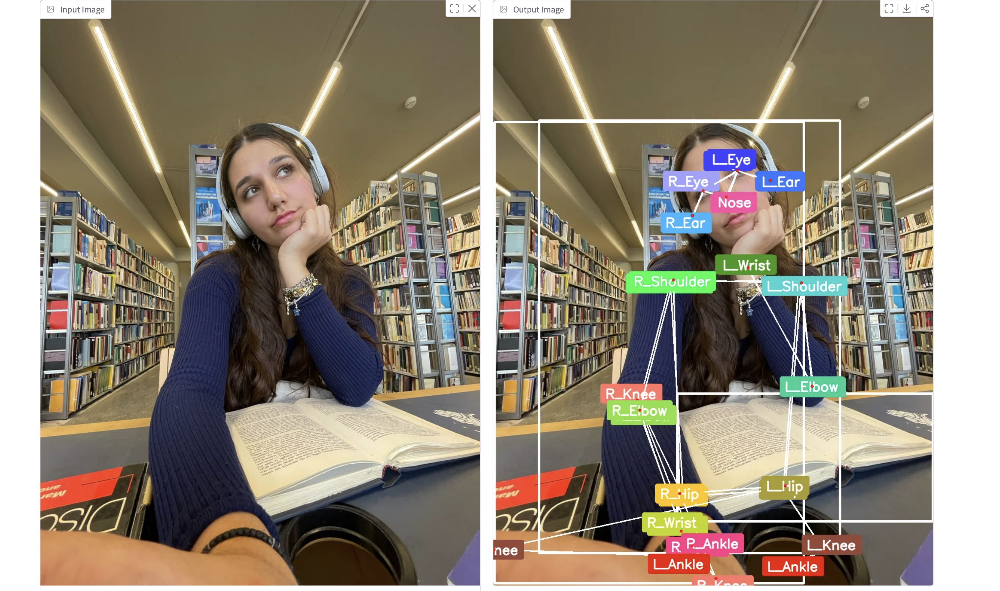
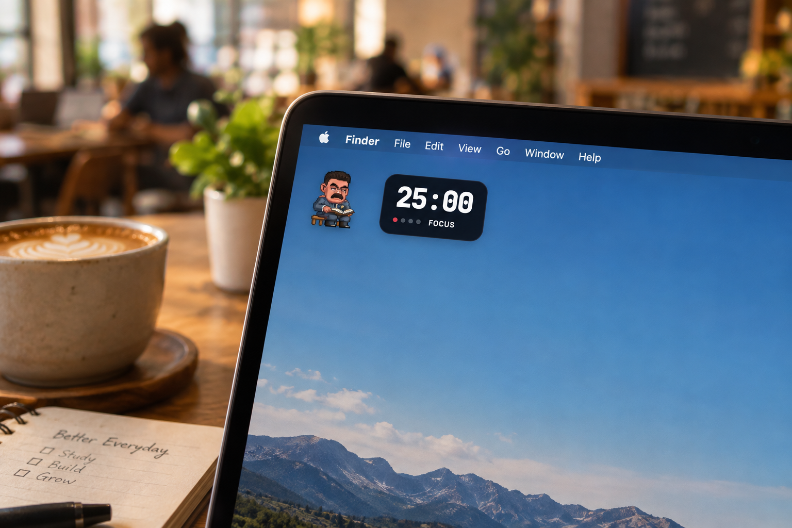
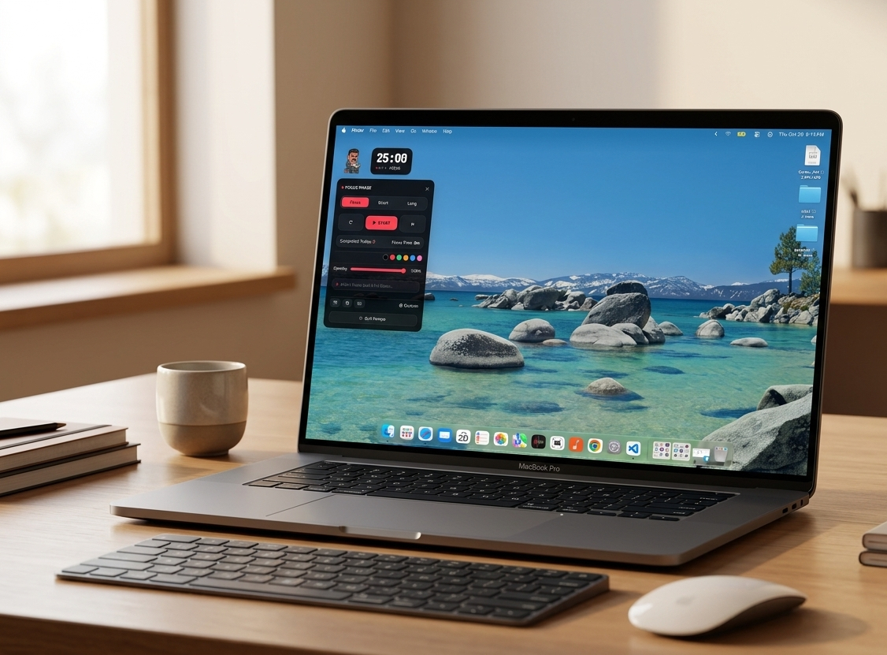
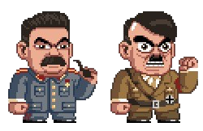

On-device AI nudges
Meet POMPO AI: your focus, under friendly watch.
POMPO AI is your desktop focus companion. Its on-device AI watches for signs that your attention has wandered and gives you a gentle nudge in real time. Your focus analysis stays on your device.
POMPO AI IN ACTION
[ Real-time focus tools // pinned to your desk ]

POMPO AI FOCUS GUARDIANLive, on-device attention cuesReal-time attention cues, analyzed on your device.

STUDY PETSPick a pixel-art characterDrag your historical parody character anywhere on your desktop.

YOUR FOCUS DESKTimers, tasks, themes and progressCustom timers, soothing sound, themes, tasks, goals and progress.
Your study boss awaits.
Make history’s famous dictators dictate your studies.
A tongue-in-cheek pixel-art pet. Drag it anywhere on your desktop.

Pick the boss of your next focus sprint
The Iron Lecturer
Interactive desk pets have moods.
Pick a mood to preview your tiny study boss’s desktop antics.
Mood preview: Grumpy
THE POMPO AI FOCUS KIT
A paper-crafted workspace for focused study sessions
A gentle nudge, right on time
POMPO AI reads focus cues in real time and alerts you when your attention drifts. Analysis runs on your device; your focus data is not sent to the cloud.
Set up your own rhythm
Run a classic Pomodoro or set a custom timer. Add soothing background sound, tune themes and opacity, organize a to-do list and goals, then track your progress.
A tiny boss for your big goals
Choose one of five historical-dictator parodies as your pixel-art study pet. Drag it anywhere on your desktop and let it theatrically supervise your next sprint.
DOWNLOAD POMPO AI
[ Direct Downloads // macOS .DMG & Windows .EXE ]